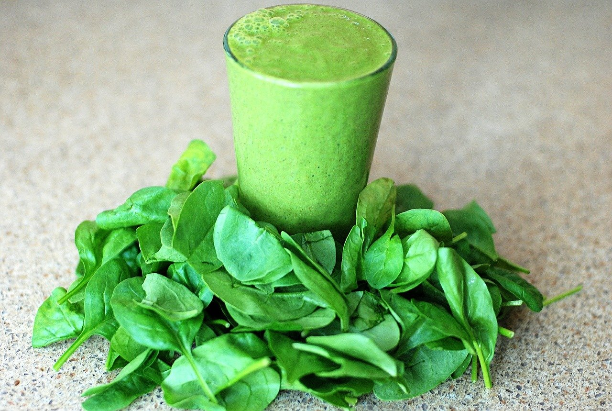

Green Smoothie

A refreshing smoothie using spinach and fruits.
This is a simple smoothie recipe that I make regularly. It is convenient
to make and makes me feel like I am getting enough vegetables and fruits
on a daily basis. Note that you will need a blender to create
this recipe. I use a Certified Reconditioned Vitamix blender
that has a 64-ounce capacity. If your blender is smaller, ratio
appropriately.
Ingredients
To make 3 to 4 servings.
- (2) apples
- (1) orange
- (1 or 2) bananas
- a bunch of spinach
- (1 or 2) cups of water
Steps
- Cut your apples into quarters and remove seeds. You may need to cut
your apple additionally depending on your blender.
- Peel the skin of your orange. You want to remove the rough skin but
try to keep as much of the white portion as possible. Quarter your
peeled orange.
- Peel your banana(s).
- Fill your blender with (1) cup of water. Then fill the blender with
your spinach.
- Blend your water and spinach mixture.
- Continue powering your blender while adding your quarters of apples
and oranges and your bananas. Add items at a rate appropriate for
your blender.
- Turn off your blender when all items are blended. Check the
consistency. If the consistency is not to your liking, add the
additional cup of water and blend for a few more seconds.